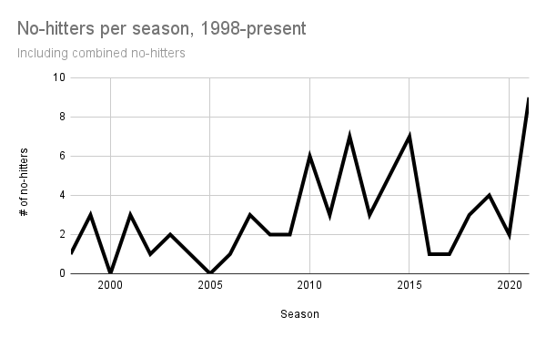
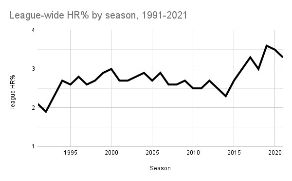
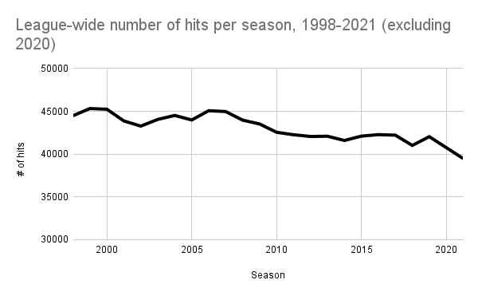
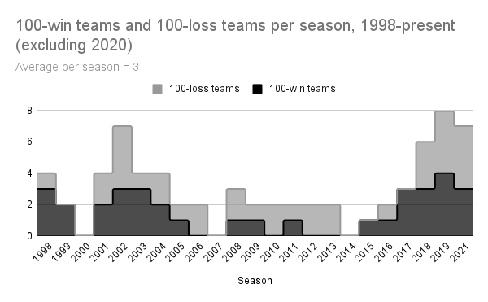

2021: A Season in Review
by A. Kline
Posted on 01/07/2022
It’s been just about a year since I started work on Baseball Analytica, and quite a lot has happened in the 362 days since I decided to create a GitHub repository for some baseball blog project thingy on January 10, 2021. This past year was also a big year for Major League Baseball itself. For one, it was the best season in Baseball Analytica’s history. However, since it is also the only season in this site’s history, it must also be the worst. See why sample size is important?
But in all seriousness, this past season was filled with some interesting records and quirks that I would like to sum up. As you may already know, and as I partially discussed earlier this season, an obscenely large number of no-hitters were thrown this season. Even though the blistering rate from the first half of the season was not kept up through the stretch (seven were thrown before July 1), 2021 still managed to see more no-hitters than any other season in MLB history.
In total, 9 no-hitters were thrown in 2021. In the 30-team era, only four seasons have seen at least half that many. (Data from Wikipedia)
This past season may seem like a welcome break from the past several seasons of nonstop offense in which several league-wide home run records have been shattered. And it is true that home run rates have moderated after the past couple years. But let’s zoom out just a bit more. Instead of just looking at the 30-team era that began in 1998, let’s back up just a bit more so we can include the entire Steroid Era for comparison.
(Data from Baseball-Reference.com)
Amazingly, in a year that broke the record for no-hitters, home runs were still hit much more frequently than even the most homer-heavy years in the Steroid Era. More impressive still, home runs in 2021 were hit at a very similar rate to that of 2017, the year people began sounding the alarm over skyrocketing homer rates.
This is not unique to homers, either. The number of runs scored is also roughly the same as it has been over the past half-decade. When looking at this data, the 2021 season seems more like a continuation of previous trends than an outlier in and of itself. But there was one piece of data I came across that really caught my eye. Throughout the 30-team era, no matter how many home runs were being hit, we could easily rely on seeing somewhere between 40,000 and 45,000 total hits in a single season. But then there’s 2021.
The number of hits per season is trending downward, but 2021 saw the biggest drop by far. (Data: Baseball-Reference.com)
It is almost comical that the only offensive value down in a record-breaking year for no-hitters is, well, hits. It’s true that hits have gradually become less frequent over the years, but nobody could have predicted a drop like this. For perspective, the last time a hit total was this low was 1995—back when there were only 28 teams. Despite this, offenses around the league are still putting up very high rates of scoring and home runs, as mentioned before. The main takeaway from this data should therefore be that over the past several seasons, offenses have made due by swinging for the fences more and more, a high-risk-high-reward strategy that in many ways is paying off, and 2021 is simply a continuation of that. Go figure.
But the downsides of this offensive strategy became crystal clear in 2021. By swinging harder and swinging more, hits are paradoxically a bit harder to get, aside from the ones that leave the ballpark. Bank too hard on this strategy and you might end up with a 0 in the hits column, as five teams learned the hard way. Will there continue to be plenty of no-hitters for the next several seasons? Probably. Will teams learn from this and overhaul their offensive game plan? Probably not.
2021 also saw another recent trend continue on October 2, when the Rays beat the Yankees by a score of 12-2. That day, Tampa Bay’s record rose to 100-61—making 2021 the fourth season in a row (excluding 2020) that at least three teams won at least 100 games. Like home run rates, this trend began around 2017 and hasn’t really abated since. Unlike home runs, however, this is actually not the first time so many teams got to see three digits in their win column.
It seems there was a 7-year pattern of parity in the league. For better or for worse, 2021 broke that pattern, and it broke it by a lot. (Data: Baseball-Reference.com)
As you might expect, more teams hoarding wins means a smaller number to go around for the rest of the league, frequently resulting in more teams seeing 100 or more losses during those years. The last time we saw this many teams of both categories at the same time was during the early 2000s, which of course was the tail end of the Steroid Era. Is there a meaningful relationship between juggernaut offenses and increasing win inequality in the league? Perhaps, but that would require further investigation. The easier question to answer would be whether or not this recent trend will continue for at least a few more years. If I had to guess, I would say yes.
Last but not least, I recently decided to create a rankings page for players and teams in order to get a better idea of 2021’s winners and losers. While not quite the same as projections, it will be interesting to see how well these rankings can predict future performance. When creating the formulas the rankings are based on, I wanted to isolate skill as much as possible. Of course it’s impossible to do that completely, but the park-adjusted nature of the rankings created some interesting surprises.
For one, the algorithm likes the Yankees offense slightly more than the Red Sox offense, which even as a Yankees fan seems a bit radical. However, it also likes the Blue Jays the most out of any AL East team, which I can understand. Interestingly, it’s the Pirates that are ranked in last place in the league, below the pair of 52-110 squads in Arizona and Baltimore. Does this mean that these teams are “due” for a better season in 2022 compared to the Pirates? We’ll have to wait and see.
In regards to player rankings, the familiar names generally tend to be located at the top, but there are some surprises. The algorithm really likes Red Sox starter Tanner Houck, but Cy Young winner Robbie Ray, not so much. The #1 hitter in baseball according to these rankings is someone who only played in 61 games, and there is a similar story with the #1 starting pitcher. There are obvious kinks in this ranking system that still need ironing out, particularly in regards to sample size, but I think I have a great base to build off of. Regardless, I would highly recommend checking the rankings out, and I am excited to see where it goes in the future.
The 2021 Major League Baseball season sure was odd. But on to 2022. Well, hopefully.